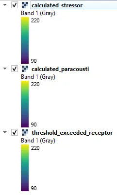
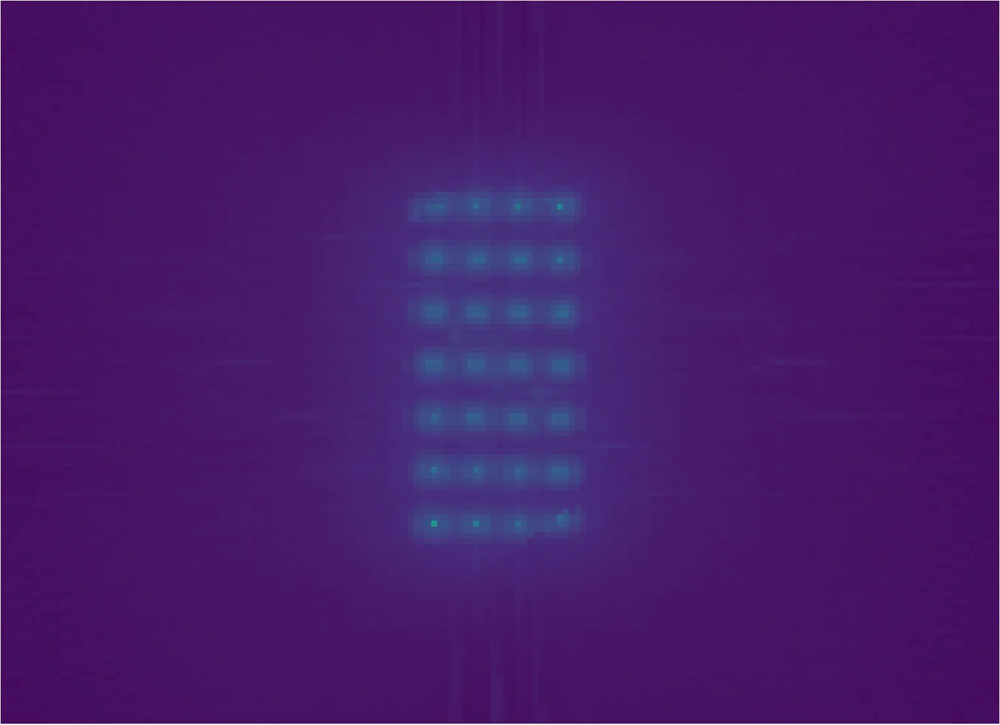

Acoustic Effects
The acoustic effects from the WEC array at PacWave can be evaluated using the Acoustic module in the SEAT GUI. This module reads in individual Paracousti model .nc files that correspond to wave conditions.
Input
If you have not done so before you will need to create input files for the default files provided. To do so naviage to DEMO/DEMO paracousti/. In that folder you will find a number of .default files. You need to open these and replace <input_folder> with the path to the DEMO unstructured folder on your machine and <style_folder> with the path to the style_files folder on your machine. If you use python a script titled localize_input_files.py will do this for you. You can run this script by navigating to the DEMO unstructured folder in a terminal and typing python localize_input_files.py. If you do not have python you can open the files in a text editor and replace the text manually or with a find and replace feature. If changing via a text editor save the file as a .ini file.
Example use of the script is shown below. After running the script .ini files will appear in the DEMO unstructured folder. These are the files you will use to load the inputs into the SEAT GUI.
With the ini files created, use the **Load GUI Inputs* button located at the bottom left of the SEAT GUI. For this demonstrationwe navigate to DEMO/DEMO paracousti/demo_paracousti_with_receptor.ini, and click OK to load the inputs. If you need detailed instructions on how to load inputs, please refer to the Save & Load Configuration section in the Graphical User Interface documention. Loading DEMO structured/demo_paracousti_with_receptor.ini the input should resemble the following with your local paths:
{kind=link}
Output
For a given probability of occurrence of each wave condition the combined annual acoustic effects can be estimated. SEAT generates a similar stressor layer consisting of the difference between the acoustic effects with and without the array. With a provided receptor file which consists of information regarding the species, threshold value, weighting, and variable used, a threshold map is generated as a percentage of time (based on the probability distribution) that a threshold will be exceeded. For demonstration purposes, an artificially low threshold is used to generate the percent exceeded threshold figure below.
| 
Layers Legend |

Calculated Stressor |

Calculated Paracousti |
Threshold Exceeded Receptor |
{kind=link}
{kind=link}
{kind=link}
Output Files
Additional output files can be found in the specifed Output folder
Output
└───Acoustics_with_receptor
calculated_paracousti.csv
calculated_paracousti.tif
calculated_stressor.csv
calculated_stressor.tif
threshold_exceeded_receptor.csv
threshold_exceeded_receptor.tif
_20231025.log